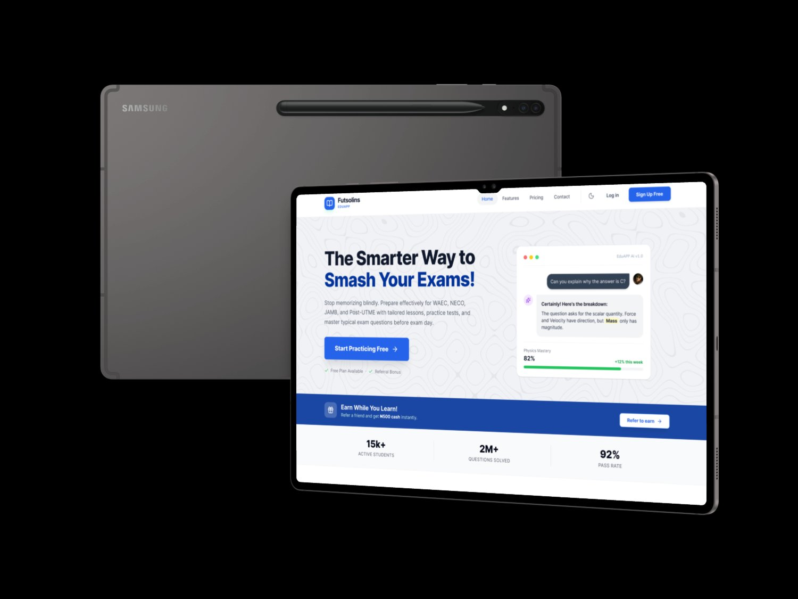

An adaptive e-learning platform for secondary school students in Nigeria. Built for low-bandwidth environments, offline-first mobile use, and the realities of the Nigerian education system.

Secondary school students (SS1-SS3) in Nigeria preparing for WAEC, NECO, and JAMB exams
An adaptive learning platform with curriculum-aligned content, quizzes, and progress tracking
During exam preparation seasons and daily study routines, often during commutes
Mobile-first on Android devices (1-3GB RAM), used on 2G/3G networks and offline
10.5M out-of-school children in Nigeria. Existing edtech assumes Western infrastructure
Offline-first architecture, ultra-light UI (under 15MB), curriculum-aligned content, adaptive learning paths
I interviewed 10 secondary school students, 4 teachers, and 2 school administrators across Lagos. Observed classroom dynamics, tested device capabilities, and mapped the actual learning journey.
Students wanted bite-sized content for commutes, interactive quizzes that feel like games, and offline access. The #1 request: "Let me study without data."
Teachers wanted curriculum alignment (WAEC/NECO syllabus), student progress tracking, and a supplement to classroom teaching.
Mix of Android 8-12, screens 5-6.5 inches, 1-3GB RAM. App must be under 20MB and load in under 3 seconds on 3G.
Analyzed uLesson, Tuteria, PrepClass, Khan Academy. Gap: none offered true offline-first with curriculum-aligned adaptive learning.
"I study on the bus to school. I need something that works without data."
"Maths is hard and my teacher moves too fast."
"I have 60 students. I need to know who is falling behind."
Lessons download over WiFi. Students study completely offline. Progress syncs when connectivity returns.
Every lesson maps to WAEC/NECO syllabus. Search by subject, topic, and exam year.
Quiz results adjust difficulty and recommend review topics. Struggling with quadratics? The app surfaces prerequisite algebra first.
App under 15MB. Every screen loads in under 2 seconds on 3G. Text-first, video optional for WiFi.
7/8 students said offline access was the reason they would use EduApp over competitors.
Changed to optional timer with untimed "practice mode" as default. Timed mode for exam prep only.
Great UX is not beautiful pixels on 4K screens. It is an interface that loads in 2 seconds on a phone with 1GB RAM and intermittent 3G.
Studying on a Lagos bus is fundamentally different from studying at a desk. Larger touch targets, sunlight-readable text, auto-save every 30 seconds.